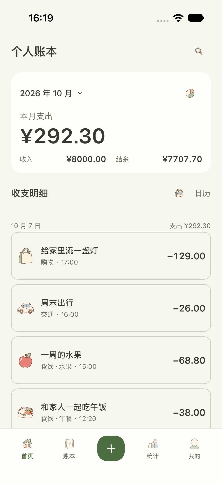
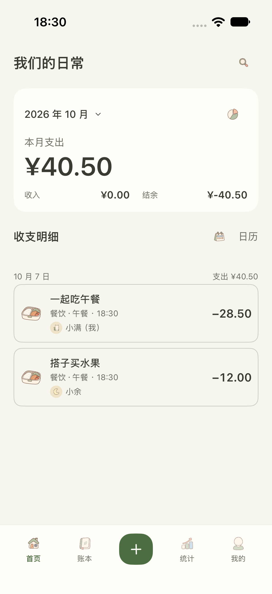
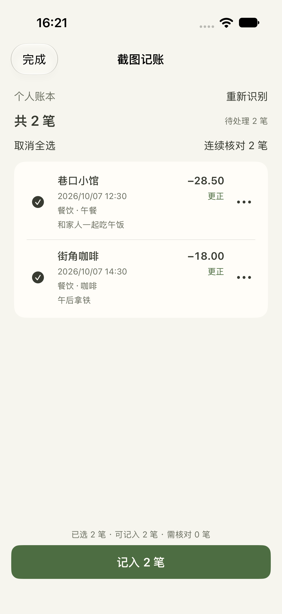

基础版
¥0
日常收支、账本与分类、统计与预算。导入和恢复免费。
SHIYU LEDGER · 一本生活账本
一顿午饭，一周的水果，一起生活的小开销。
用简单的记录，看清钱的去向，也看见生活。
专为 iPhone 与 iPad 打造 · 正在准备上架

打开就是账本，没有广告打扰。
不用注册拾余账号，随时记下一笔。
基础记账离线可用，云同步按需开启。
FOR EVERYDAY LIFE
从自己的小习惯，到一家人的共同开销。分类、标签、预算与统计，让每笔记录都有条理。

创建一本家庭账本，邀请家人共同记录。买菜、出行和添置好物，共同开销一目了然。
本机 OCR 自动提取截图文字，也可选择豆包 AI 快捷指令识图记账。少一点重复输入，多一点从容。

SMALL DETAILS, EVERY DAY
支持简体中文与 English。在应用设置里随时切换；英文使用三位千分分隔，例如 ¥1,234,567.89。账本名称、备注和已保存的金额保持不变，币种仍为人民币。
SIMPLE, BY CHOICE
先安心记账，再选择适合自己的方案。应用包含可选内购。
Pro 免费体验 7 天，到期不扣费、不自动转订阅。
日常收支、账本与分类、统计与预算。导入和恢复免费。
个人 iCloud、家庭共享、截图识别、导出与应用锁。主动购买后按年自动续费。
一次购买，解锁 Pro，无需续费。
以上为中国大陆参考价格，实际价格与可用商品以 App Store 购买确认页为准。7 天体验每个 App Store 账户一次。体验或订阅到期保留账本与历史记录。查看完整内购规则 →
GOOD TO KNOW
可以。基础记账无需注册或登录拾余账号，离线也能使用。你主动开启个人同步或家庭共享时，设备需要登录 iCloud。
基础数据保存在本机。主动开启的同步和共享使用 Apple CloudKit；豆包识图会在你授权运行快捷指令后将相关内容交给豆包。详见隐私政策。
不会。独立的 7 天免费体验到期不扣费、不自动转为订阅。只有你自行购买年度方案后，才会按年自动续费；永久方案为一次购买。
欢迎通过 906626481@qq.com 反馈问题。请说明应用版本、iOS 版本和操作步骤，避免发送密码、验证码或不必要的个人资料。